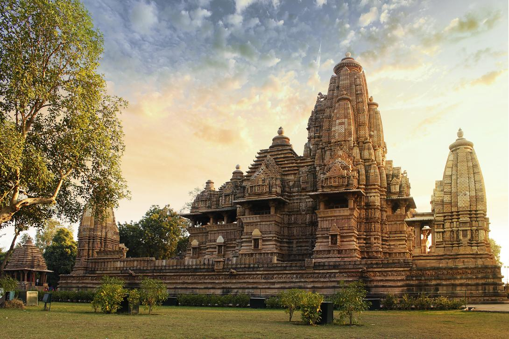

Madhya Pradesh
"The Heart of Incredible India"
Quick Facts
Popular Tourist Attractions
Khajuraho Temples
World Heritage site known for intricate erotic sculptures.
Kanha National Park
A premier tiger reserve and inspiration behind *The Jungle Book*.
Sanchi Stupa
Ancient Buddhist monument dating back to 3rd century BCE.
Nature & Wildlife
Madhya Pradesh has the highest number of tigers in India. National parks like Bandhavgarh, Pench, and Satpura are teeming with wildlife.
Famous Personalities
- Lata Mangeshkar: Legendary singer born in Indore.
- Kailash Satyarthi: Nobel Peace Prize winner for child rights activism.
- Raghuram Rajan: Former RBI Governor, hails from Bhopal.
Local Handicrafts
Famous for Chanderi and Maheshwari sarees, Zari work, bell metal craft, and terracotta items.
Climate
Subtropical climate with hot summers, monsoon rains, and cool winters. Forests cover about 25% of the state.
Culture & Festivals
Folk Dance & Music
Folk dances like Matki, Tertali, and Karma are vibrant and expressive.
Festivals
Lokrang Festival, Khajuraho Dance Festival, and Diwali are celebrated with energy and color.

Cuisine
Famous for Poha-Jalebi, Bhutte ka Kees, and Bhopali kebabs.
Clothing
Men wear dhotis and safas; women wear lehenga-choli or sarees with tribal jewelry.
Did You Know? Madhya Pradesh is home to Bhimbetka rock shelters with some of the world’s oldest cave paintings.
Note: Information may be subject to updates. Kindly notify us of any discrepancies.